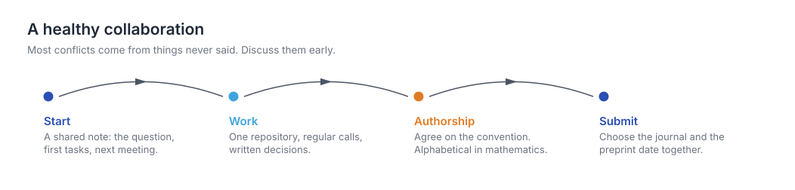

Guides · Method
Collaboration and authorship
How to start and run a research collaboration, share work fairly, decide author order, and avoid the most common conflicts. Includes the conventions of mathematics and other fields.

Most research today is collaborative. Good collaborations produce better papers and lasting friendships. Bad ones produce delays and conflicts. A few habits make the difference.
Starting a collaboration
Collaborations usually start from a conversation: after a talk, during a visit, at a workshop. To turn a conversation into a project:
- Write a short shared note after the discussion: the question, the idea, the first steps.
- Agree on a first concrete task for each person.
- Fix a date for the next meeting.
Working together
- Shared files: use a shared repository (Git, Overleaf, or a shared folder) with a clear structure. One main
.texfile, one bibliography. - Regular meetings: short and frequent meetings keep a project alive. A weekly or fortnightly call is common.
- Written notes: after each meeting, write down what was decided and who does what.
- Honest communication: say when you are busy, when you are stuck, or when you think an idea does not work.
Authorship
Being an author means taking responsibility for the content. All authors should:
- contribute substantially to the work,
- read and approve the final version,
- be able to explain and defend the main results.
Author order
Conventions differ by field. Know the convention of your field and discuss it early.
- Mathematics and theoretical computer science: authors are usually listed in alphabetical order of surname. This signals equal contribution. Changing the order is unusual and should be discussed explicitly.
- Experimental sciences: the first author did most of the work, the last author is often the group leader. Middle positions follow contribution.
- Some fields use contribution statements (such as the CRediT taxonomy) to describe each author's role.
When collaborating across fields, agree on the convention at the start.
Common conflicts and how to avoid them
- Unequal contribution: discuss roles openly. If someone stops contributing, talk before the paper is finished, not after.
- Different speeds: agree on deadlines and respect them, or renegotiate early.
- Credit for an idea: acknowledge people who contributed an idea but are not authors.
- Submission decisions: decide together which journal to target and when to post the preprint.
- Leaving a project: if you leave, say so clearly and agree on what happens to your contributions.
Students and supervisors
A PhD student should be an author on the papers that come from their thesis work. Discuss authorship with your supervisor early. In mathematics, a thesis is sometimes written alone even when the topic came from the supervisor. Practices vary: ask.
Acknowledgements
Thank people who helped: discussions, comments on drafts, corrections, hosting a visit. Ask them before thanking them by name for a specific idea.
Checklist
- We wrote a shared note at the start with the question and first tasks.
- We agreed on author order and the convention of our field.
- We have a shared repository and regular meetings.
- All authors approved the final version.
- People who helped are acknowledged.